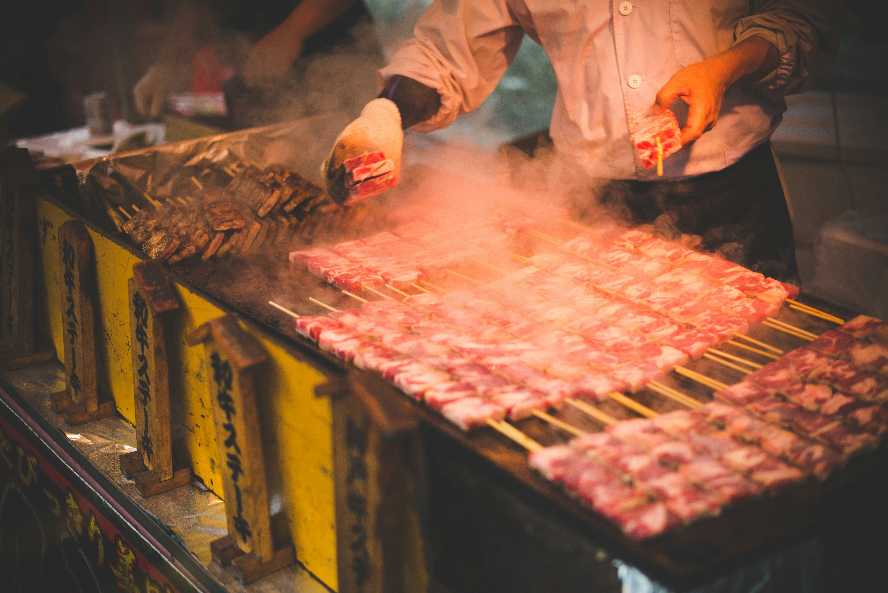

Welcome to Traveling on a budget
Traveling on a budget cheap food options
Traveling on a budget doesn't mean you have to sacrifice trying local flavors and enjoying your food experiences. Here are some fun and budget-friendly tips when it comes to food while traveling: Street Food Exploration: Street food is often delicious, authentic, and inexpensive. Look for local street food markets to try regional specialties without breaking the bank. Local Markets: Visit local markets to buy fresh fruits, vegetables, and other local produce. You might even find unique snacks and ingredients to try. Picnics: Instead of eating every meal at a restaurant, consider having a picnic. Pick up some local bread, cheese, and fruits for a cost-effective and enjoyable meal. BYOB (Bring Your Own Bottle): Carry a reusable water bottle to refill throughout the day. This saves money on buying bottled drinks and helps you stay hydrated. Cook Your Own Meals: If your accommodation allows it, consider preparing some simple meals in your own kitchen. This can save you money compared to eating out for every meal. Ask Locals for Recommendations: Locals often know the best places to eat that won't break the bank. Ask for recommendations to discover hidden gems.
